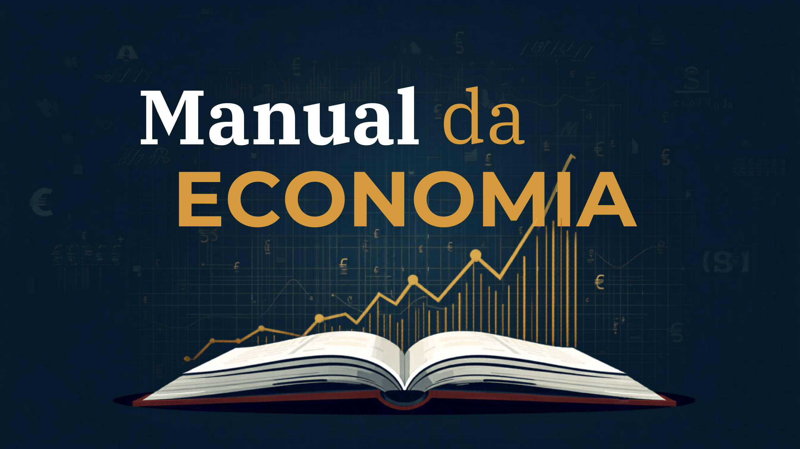

Macroeconomia
Analise os grandes agregados econômicos e os mecanismos que influenciam a renda, os preços e o crescimento de uma economia.

A macroeconomia é o ramo da ciência econômica dedicado ao estudo dos agregados econômicos em nível nacional e global. Enquanto a microeconomia analisa o comportamento individual de consumidores e firmas, a macroeconomia observa o funcionamento da estrutura econômica como um todo.
Se a microeconomia foca nas peças individuais do sistema, a macroeconomia analisa o funcionamento da estrutura como um todo. O objetivo fundamental da análise macroeconômica é compreender como a produção, a renda, os preços e o emprego evoluem ao longo do tempo.
O principal indicador da atividade econômica é o Produto Interno Bruto (PIB), definido como a soma de todos os bens e serviços finais produzidos em um determinado país durante um período específico.
Outro pilar analítico essencial é a Inflação, caracterizada pelo aumento contínuo e generalizado do nível de preços de bens e serviços, o que implica a perda progressiva do poder de compra da moeda.
Para controlar a inflação e regular o nível de atividade, a autoridade monetária utiliza a Taxa de Juros básica, no Brasil denominada taxa Selic (Sistema Especial de Liquidação e Custódia).
Adicionalmente, a macroeconomia analisa a taxa de Desemprego e o nível de ocupação do mercado de trabalho. A alocação eficiente da força de trabalho constitui um dos maiores desafios da política econômica.
Em suma, a compreensão dos fundamentos macroeconômicos permite analisar criticamente os impactos das políticas monetárias e fiscais sobre a produção, a renda e a estabilidade financeira do país.